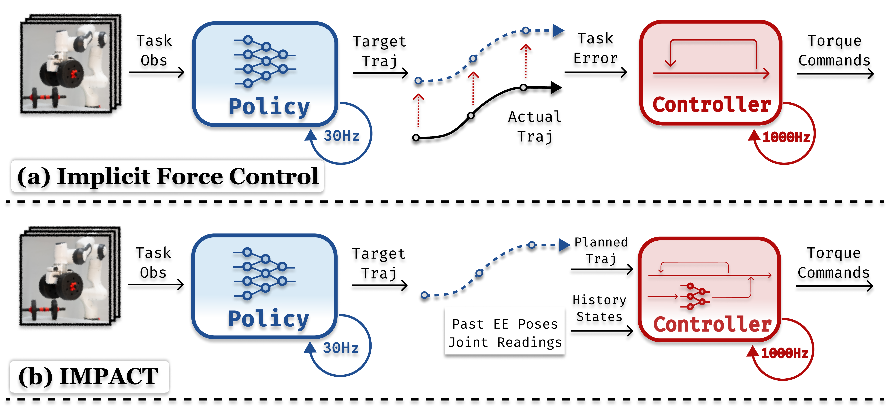

1 Harvard University2 Stanford University3 Tsinghua University
Scroll
At A Glance
What Is New
We introduce IMPACT, a framework designed for forceful robotic manipulation tasks.
By learning an internal model of environment dynamics and contact interactions online, IMPACT utilizes feedforward control alongside an imitation learning policy.
This architecture is directly inspired by—and closely parallels—the mechanisms found in the human cerebellum.
Why It Matters
Everyday household tasks often involve significant interaction forces.
To finish the tasks, imitation learning policies must adapt to varying contact dynamics—such as adjusting vertical lift force to compensate for an object's weight.
Our research shows that vanilla imitation learning with impedance control fails to generalize to these gravitational loads, leading to task failure even as training data scales.
Takeaway Messages
Simply scaling up data within a vanilla imitation learning framework is insufficient for tasks requiring sustained contact and force modulation.
IMPACT provides a robust alternative, serving as a specialized framework for complex, force-sensitive manipulation tasks where traditional methods struggle to adapt and generalize..
Everyday household tasks often involve significant interaction forces.
Imagine, to lift objetcs, we need to apply upward forces that counteract objetcts' gravity;
to open a heavy door, we need to push with enough force to overcome the door's inertia and friction;
to wipe and clean the table, we need to apply downward forces to maintain contact and adjust them based on the surface texture and cleaning tool.
To make general purpose robotic foundation models capable of performing these tasks,
we need learning-based systems that can reason about the environment dyanmics, adapt to different scenarios, and modulate interaction forces accordingly.
However, this is not trivial for current imitation learning systems, where a high-level policy is trained to mimic end-effector trajectories from demonstrations, and a low-level impedance controller tracks those trajectories while generating interaction forces implicitly from tracking errors.
Take the example of lifting objects of different weights:
for a light object, the demonstrated trajectory may require only a small upward force to counteract gravity, and the policy only need to mimic the demonstrated end-effector trajectory.
But for a heavier object, the required upward force is larger, and the policy would need to produce a steady end-effector tracking error to generate enough interaction force for the low level impedance controller.
However, this formulation couples the task-level motion planning and dynamics-level force interaction,
which makes it difficult for the policy to learn, and also leads to poor generalization when environment dynamics change.
We propose IMPACT, a framework that decouples task-level motion planning and dynamics-level force interaction by learning an internal model of environment dynamics and contact interactions online.
A high-level imitation learning policy is trained to mimic the demonstrated end-effector trajectories, while we introduce an internal model that runs 1000Hz inside the control loop to predict contact- and payload-induced forces and compensate for them through feedforward torque commands.
Experiments in simulation and on a real Franka robot across lifting, disturbance compensation, and hybrid position-force tasks show that IMPACT achieves higher success rates under changing payloads, improved generalization to unseen object weights, and better safety and energy efficiency than implicit force-control baselines.
Methods
IMPACT decouples task-level motion planning and dynamics-level force interaction commands.
The high-level imitation learning policy [1].
During execution, the internal model predicts payload- and contact-induced forces before the slow force estimate has fully converged.
The controller then compensates for those predictable forces through feedforward torque commands, while retaining compliant feedback behavior for transient contact events.

Fig 1. Overview of IMPACT and comparison with implicit force control method. (a) In implicit force control, forces are generated implicitly by the policy through producing virtual target trajectories that induce tracking errors, which are converted into interaction forces by a low-level impedance controller. (b) In IMPACT, the controller generates desired interaction forces: an internal model predicts contact and payload-induced forces and compensates via feedforward torque commands.
IMPACT's control loop keeps the learned policy focused on task intent and lets the internal model handle predictable force compensation.
This mirrors the role of an internal dynamics model in motor learning: repeated interaction improves the prediction of persistent disturbances, which can then be counteracted earlier and more smoothly.
Fig 3. Diagram of interaction behavior and control response.
Results
IMPACT is evaluated in simulation and on a real Franka robot across lifting, disturbance compensation, and hybrid position-force tasks.
The results show higher success rates under changing payloads, improved generalization to unseen object weights, and better safety and energy efficiency than implicit force-control baselines.
The qualitative videos below highlight the same trend: when force demands shift, IMPACT adapts through predictive compensation instead of relying on the policy to encode every possible force response in the demonstrated trajectory.
Fig 2. Results and qualitative analysis.
Generalization to unseen object weights.
Safe compliant behavior during forceful interaction.
Hybrid position-force control for large calligraphy strokes.
Fine contact modulation for smaller calligraphy strokes.
Analysis
These videos provide a closer look at baseline behavior, failure modes, and controller adaptation across different payload and contact conditions. The baseline clips show how policies that rely on implicit force generation can succeed in easier settings but become brittle when the required compensation changes.
The controller clips focus on the role of the online internal model. As repeated interaction reveals persistent force disturbances, IMPACT learns to anticipate them and applies feedforward compensation earlier, producing smoother and more reliable forceful behavior.
Baseline with a light object: implicit force control can complete easier payload settings.
Baseline with a heavier object: larger unmodeled forces expose poor generalization.
Dumbbell baseline: payload variation changes the force profile needed for stable lifting.
Controller baseline: feedback alone reacts after force error appears.
Controller adaptation: the internal model learns persistent interaction forces online.
Controller teleoperation: predictive compensation transfers to human-guided interaction.